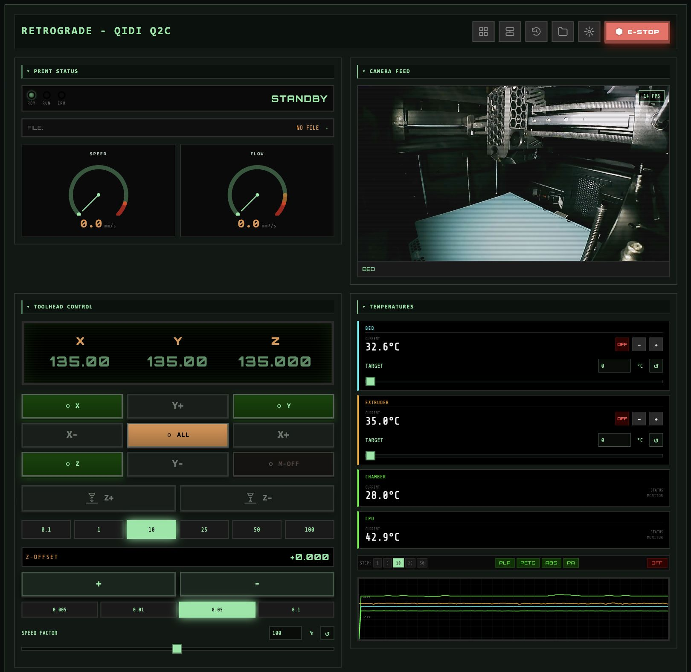
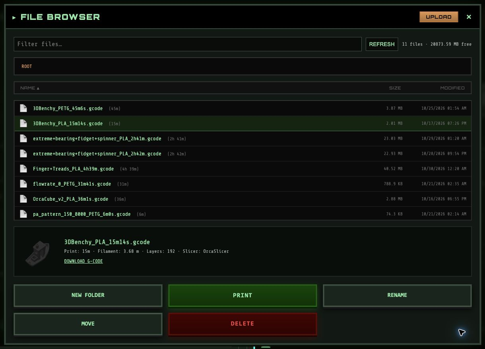

Move with a clear target.
Jog an axis or enter an absolute position. Homing and motor indicators reflect the printer’s state, with travel limits checked before a move.
KLIPPER / MOONRAKER
Live controls, continuous camera feeds, and preferences that follow your printer. A focused interface with a character of its own.
Open source. Self-hosted. Built for your workshop.

01Know the state.Live readings and clear feedback.
02Make it yours.Collapsible, rearrangeable panels.
03Keep your setup.Preferences stored with your printer.
THE WORKING PARTS
The controls you reach for, with the context you need. No wall of diagnostics between you and your printer.
Jog an axis or enter an absolute position. Homing and motor indicators reflect the printer’s state, with travel limits checked before a move.
Worker-based MJPEG streaming keeps frames moving without a reload loop. Camera traffic stops when the view is collapsed, offscreen, or in a hidden tab.
Heaters, chamber sensors, fan speeds, live graphs, and numeric targets. Keep system monitors out of the way without losing your chamber reading.
Rearrange panels with an explicit layout toggle, collapse what you don’t need, and give your everyday macros a place of their own.
Switch between Moonraker hosts without mixing up their settings. Printer and interface preferences sync through each host’s Moonraker database.
Automatic reconnects after connection loss or device sleep. Local settings caches keep your setup available when the printer isn’t.
BEFORE THE FIRST LAYER
Browse, filter, and upload files without losing your place. See the model thumbnail, slicer estimate, filament usage, and layer count before starting a job.
Explore print management
GET STARTED
A static web frontend that connects to Moonraker. Serve it alongside your printer’s existing services or build your own container.
Get the interface shown on this page. Flight is the default; no theme flag needed.
git clone --branch dev https://github.com/justinh-rahb/retrograde.git
cd retrograde
npm ci
npm run buildServe dist/ with your web server, then add your Moonraker host. Full installation guide ↗
The installer downloads the latest release, with optional nginx setup. Run it again to update.
curl -sSL https://justinh-rahb.github.io/retrograde/install.sh | bashThe latest published release predates Flight v2. Build dev for the interface shown above, or browse release archives ↗.
Bundle a settings export for new hosts, or choose the original theme. Existing user preferences take precedence.
docker build --build-arg DEFAULT_SETTINGS_FILE=printer-defaults.json -t retrograde .
# Original v1 theme: add --build-arg APP_THEME=retroRun the release installer again to update. It reuses installations under the former retro-cnc-panel name. To remove an installer-managed setup:
curl -sSL https://justinh-rahb.github.io/retrograde/install.sh | bash -s -- --uninstallBUILT IN THE OPEN